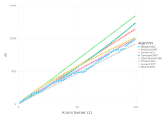
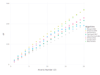

Comparing J (mean ionization potential) Models
The mean ionization potential is a a crude estimate of how much energy an energetic electron will lose traversing a pure element in a continuous slowing down model.
$\frac{\delta E}{\delta \rho z} = \frac{2 \pi e^4 Z}{A E} log(1.166 \frac{E}{J})$ in $\frac{eV cm^2}{g}$
using NeXLCore
using Gadflyalgs = Iterators.reverse( (Bloch1933, Jensen1937, Wilson1941, Sternheimer1964, Springer1967, Zeller1973, Brizuela1990, Berger1982,) )
zs = 1:99
colors = Scale.color_discrete_hue().f(length(algs))
layers = [ layer(x = zs, y = map(z->J(alg,z),zs), Theme(default_color=color(colors[i]))) for (i,alg) in enumerate(algs) ]
plot(layers..., Guide.manual_color_key("Algorithm", collect(repr.(algs)), colors),
Guide.xlabel("Atomic Number (Z)"), Guide.ylabel("eV"))
Looking more close at the important low-Z end.
algs = Iterators.reverse( (Bloch1933, Jensen1937, Wilson1941, Sternheimer1964, Springer1967, Zeller1973, Brizuela1990, Berger1982,) )
zs = 1:20
colors = Scale.color_discrete_hue().f(length(algs))
layers = [ layer(x = zs, y = map(z->J(alg,z),zs), Theme(default_color=color(colors[i]))) for (i,alg) in enumerate(algs) ]
plot(layers..., Guide.manual_color_key("Algorithm", collect(repr.(algs)), colors),
Guide.xlabel("Atomic Number (Z)"), Guide.ylabel("eV"))
If we presume that Berger (1982) is the most accurate, then Zeller (1975) is about as good as it gets for the analytical expressions.
If we assume that each element acts independently, the we would expect that $\frac{\delta E}{\delta \rho z} = \sum_{z} C_z \frac{2 \pi e^4 Z}{A E} log(1.166 \frac{E}{J_z})$ where $C_z$ is the mass-fraction of element $z$.